跳彈坦克：白色場地＋粉彩坦克（v10）
照你的指示改：白色場地、坦克用粉彩色系、分隊更明確、右搖桿放開就發射（沒有發射鈕）。之後再讓兩位沒看過程式碼的審查各挑一次毛病、各修一輪。下面每張左邊是 v7（木盒），右邊是 v10（標竿截圖有版權，不放公開站）。
▶ 試玩 v10（手機橫放）改了什麼
| 你說的 | 怎麼做 |
|---|---|
| 白色場地 | 淺暖灰地板＋最亮的白色方塊（頂面外緣一條細線，牆才讀得出來）、淡紫 45° 投影；坑洞是挖穿板子、看到底下的桌面 |
| 坦克粉彩色系 | 粉藍、粉紅、粉綠、粉紫、粉黃、粉青、粉橘…；深梅色描邊；炮彈深色彈身、煙尾是發射者的顏色 |
| 分隊再明確 | 隊色只畫在腳下的圈、小旗、瞄準虛線、HUD 圓點與右搖桿：藍隊＝實線圈＋三角旗、紅隊＝虛線圈＋燕尾旗（灰階、色盲也分得出）。2 對 2 時藍隊車身冷色（粉藍＋粉青）、紅隊暖色（粉紅＋粉橘）。戰役：你是藍隊、敵人全是紅隊。你自己的圈外多一圈白 |
| 右滾輪放掉即發射 | 拿掉發射鈕。右搖桿拖出去＝上膛（全亮、外圈發光）→ 放開發射；拖回中心再放＝取消（變紅＋×）；輕點＝往目前方向發射。右搖桿頭平常就是隊色＋準星（一看就知道那支是開火），沒彈變深灰；剩幾發是上方的小點；前 3 局下方有「拖曳瞄準・放開發射」提示 |
審查分數（10 分＝跟標竿一樣好）
| 版本 | 平均 | 審查說差最多的 | 下一版怎麼改 |
|---|---|---|---|
| v8 | 6.3 | 白對白：牆頂和地板幾乎一樣亮；右搖桿待機看不出能開火 | 地板降一階、方塊加外緣線；右搖桿頭隊色實心；旗子移到圈的 11 點鐘、旗形分隊 → v9 |
| v9 | 6.1 | 明度主次倒過來：坑洞和投影比坦克重；隊色圈太細、藍紅等明度 | 圈加粗、藍隊壓深、紅隊虛線圈；坑洞看到桌面；準星圖示；擊毀加力 → v10 |
兩位審查都點名的是坦克在畫面上太小（約 23 pt，標竿主角約 2 倍大）。玩法需要看全場算反彈角，要再放大得把場地格數縮小（20×14 → 16×11，坦克約大 1.25 倍）。
2 對 2 分隊（v10）
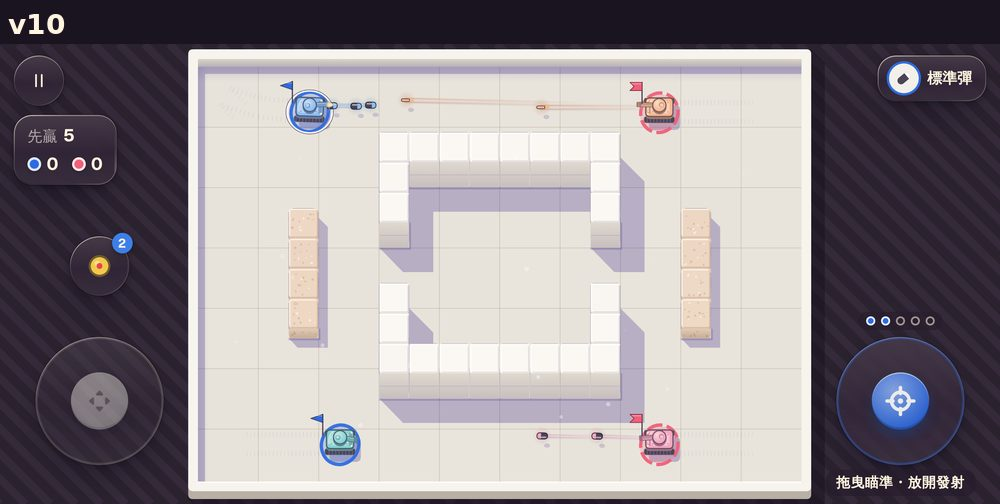
右搖桿上膛（v10）
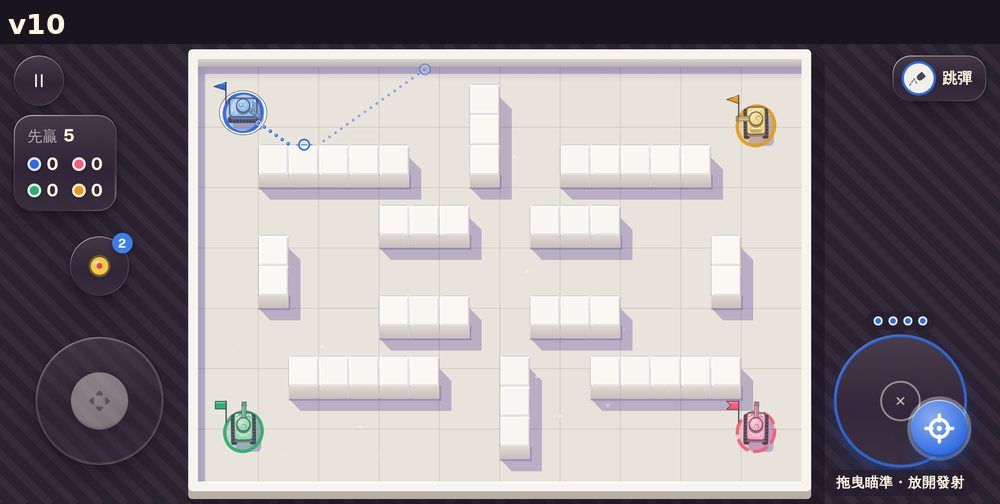
全景
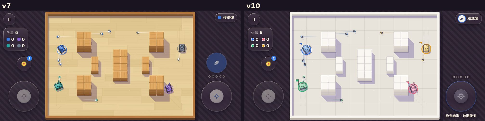
戰役
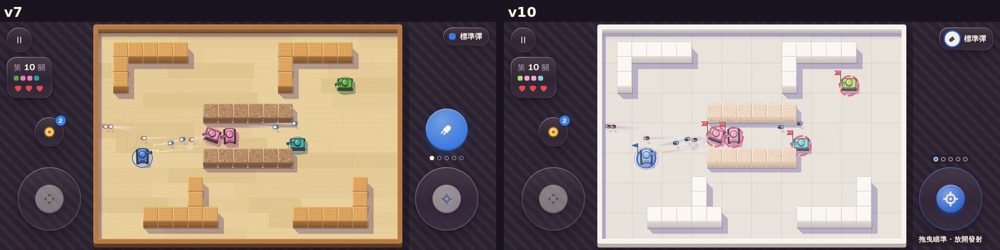
瞄準虛線
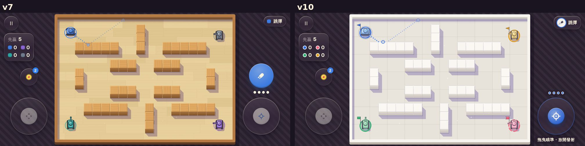
坑洞
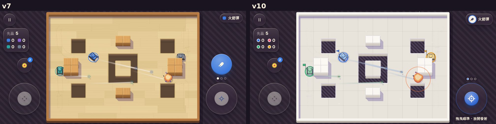
局部放大
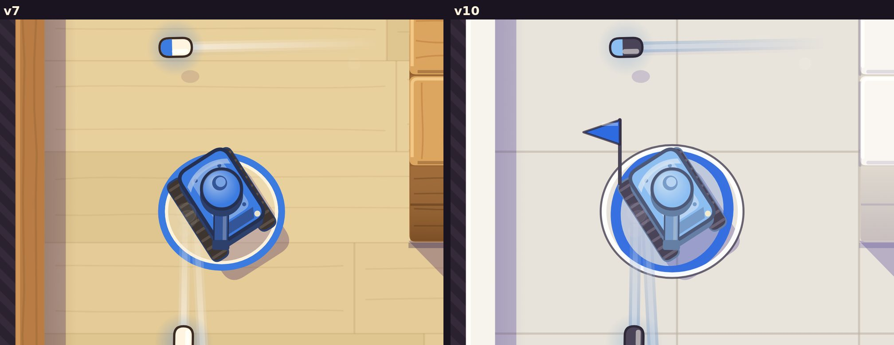
擊毀
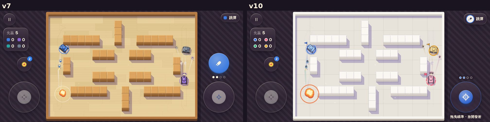
選單
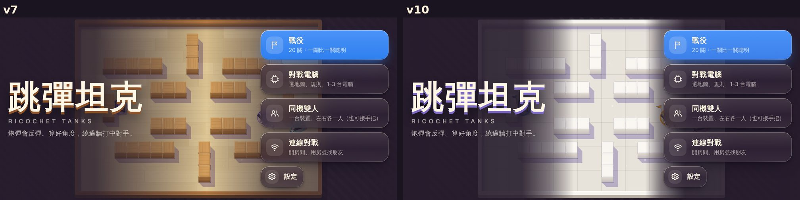
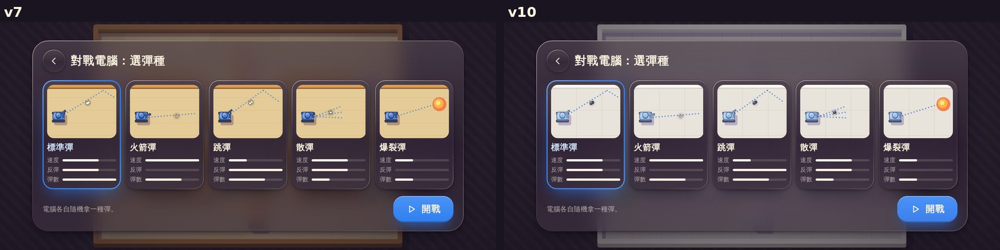
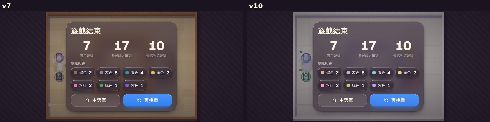